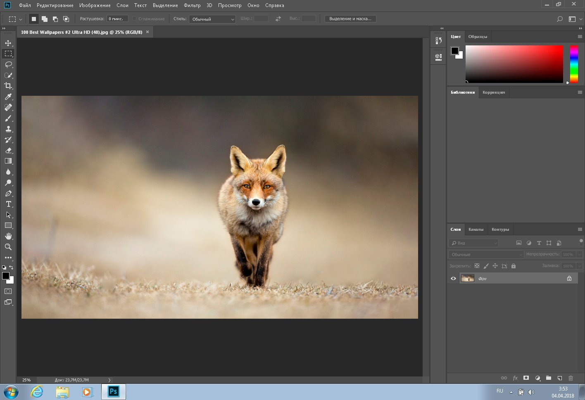

Размещение изображений в html-документе
Где взять изображение?
- Изготовить самостоятельно. Для этого есть множество графических редакторов, например Adobe Photoshop.
В нем можно создавать и редактировать изображения, сохраняя их в нужном формате.

- Использовать чужие изображения, но только в случае, если получено разрешение от владельца или если они взяты с сайтов с бесплатными картинками.
Какие форматы изображений используются в Web?
- Формат GIF. Поддерживает 256 цветов, прозрачность (позволяет любой цвет в палитре сделать прозрачным), анимацию (сохранение в одном файле нескольких изображений).
- Формат JPEG Поддерживает до 16,7 млн. цветов. Используется для сохранения фотографических изображений.
Какие ограничения существуют при размещении изображений?
- Прежде всего размер, так как большие изображения сильно замедляют время загрузки страницы.
- Формат изображения. Размещайте на свои страницы только те форматы изображений, которые поддерживаются большинством браузеров. В настоящий момент – это GIF и JPEG.
[ Домой ]